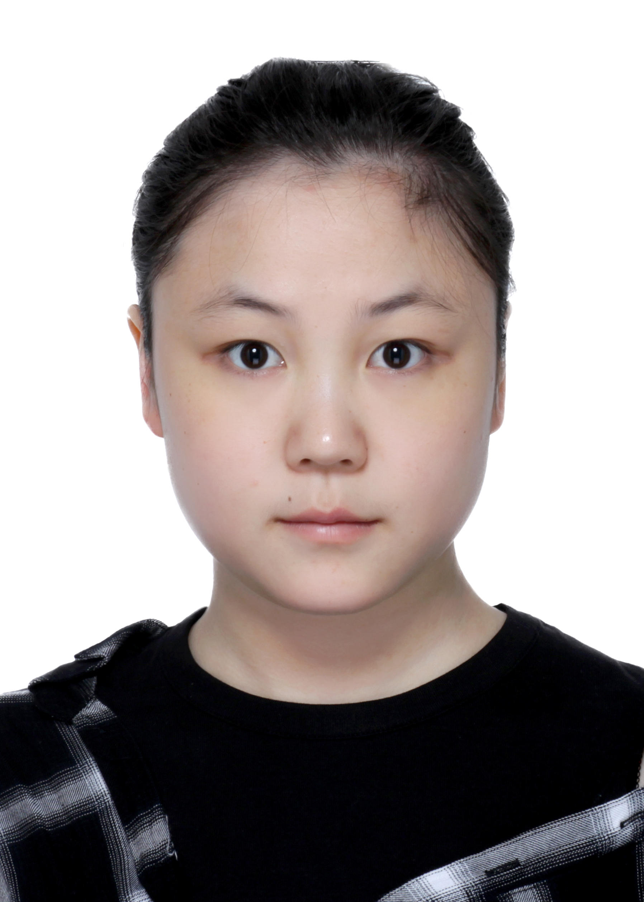

Yihan Ma
About Me
I received my B.S. degree from the School of Computer Science at Fudan University in 2018. In Fudan, I am a student research assistant in the Mobile Systems and Networking (MSN) group from 2017 to present. In 2018, I visited the TCSNR (Tsinghua Center for Social Network Reasearch) at Tsinghua University, advised by Prof. Luo-Jar Der. My research interests include online social networks, data mining. Now she is a graduate student within the School of Computer Science at Fudan University.
Here is my full CV.